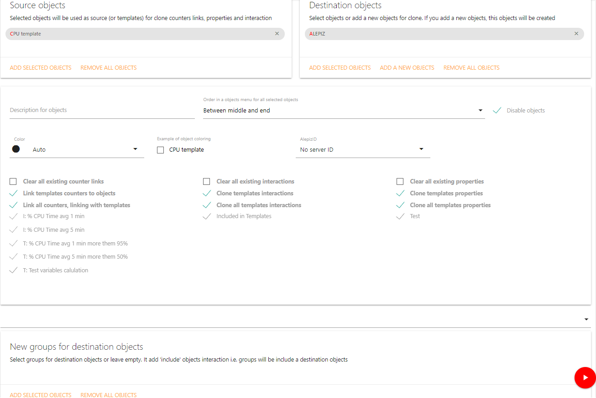
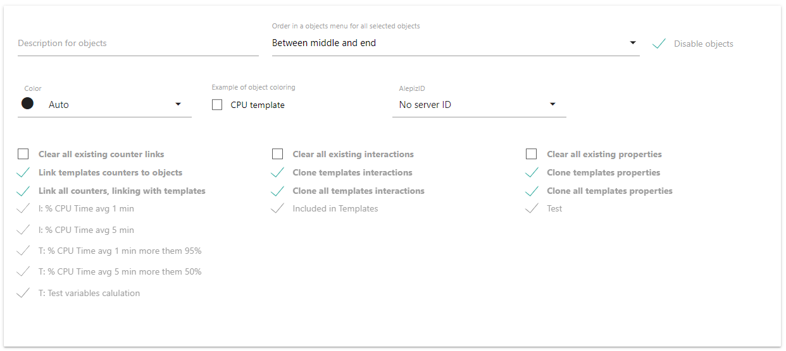
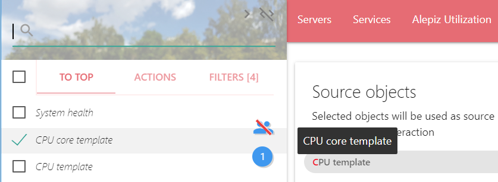
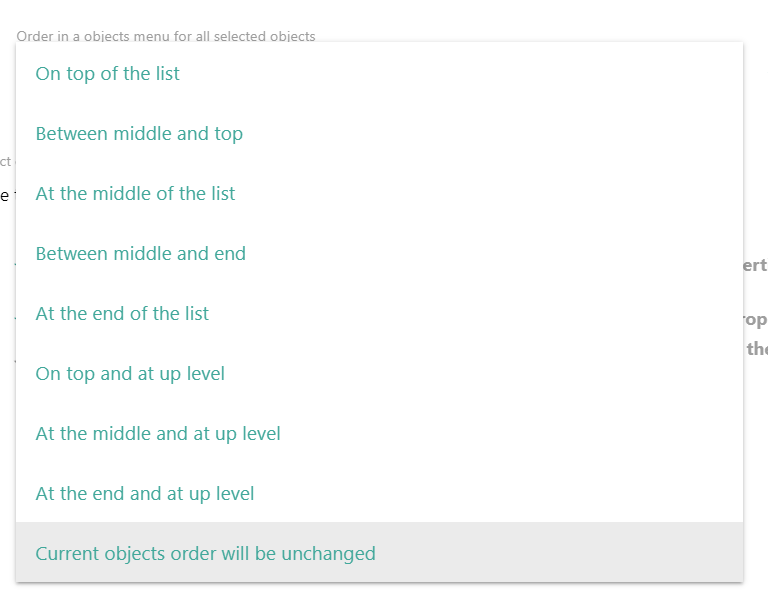
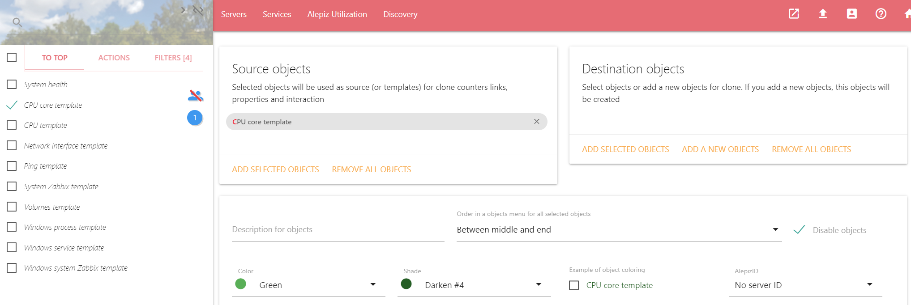
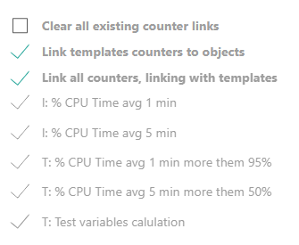
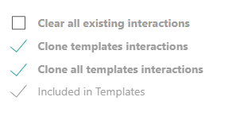
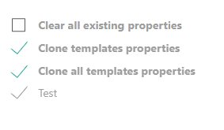
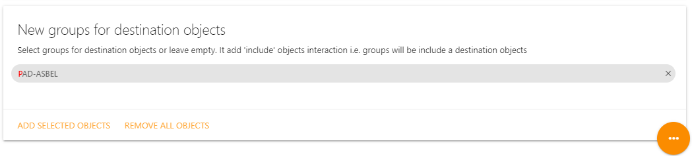

<!--Created by Alexander Belov on 18.04.2020.
 Copyright (C) 2020. Alexander Belov. Contacts: <asbel@alepiz.com>
--><!DOCTYPE html><html lang="ru" xml:lang="ru" xmlns="http://www.w3.org/1999/xhtml"></html><head><title>Objects clone: клонирование свойств объектов, подключений объектов к счетчикам и взаимодействий</title><link rel="stylesheet" href="../../../materialize-css/dist/css/materialize.css"><link rel="stylesheet" href="../../../material-design-icons/material-icons.css"><meta name="viewport" content="width=device-width, initial-scale=1.0, maximum-scale=1.0, user-scalable=no"><meta name="author" content="Alexander Belov &amp;lt;asbel@alepiz.com&amp;gt"><script src="../../../materialize-css/dist/js/materialize.js"></script><script src="../../../javascripts/help.js"></script></head><body><header><div class="row"><div class="col s12 m10 offset-m1"><h1>Objects clone</h1><h5 class="light">С помощью Objects clone можно клонировать свойства объектов, подключение объектов к счетчикам,
взаимодействия объектов, описание объектов, порядок их отображения в списке Objects и аттрибут
объекта Disable, отвечающий за необходимость сбора данных счетчиками
</h5></div></div></header><main><div class="row"><div class="col s12 m10 offset-m1"><h2>Предназначение Objects clone</h2><p>Objects clone позволяет копировать параметры одних объектов другим объектам.
Таким образом можно быстро настроить обслуживание большого количества объектов, обладающих
одинаковыми свойствами. Можно автоматизировать установку параметров объектов на основе
используемых в качестве шаблонов, предварительно настроенных объектов.</p><h5>Возвращаемое значение: разделенными запятыми object ID (идентификаторы объектов в которые
копируются свойства из базы данных).
</h5><h2>Описание полей ввода</h2><h3>Source objects</h3><p>В этом элементе перечислены объекты, с которых будут копироваться свойства.
Для того, чтобы добавить объекты в Source objects, нужно выбрать объекты в системном меню
Objects и нажать на ADD SELECTED OBJECTS. Если нажать на крестик справа от объекта в
Source objects, объект будет удален. Удалить все объекты из Source objects можно нажав на
REMOVE ALL OBJECTS.
</p><h3>Destination objects</h3><p>В этом элементе перечислены объекты которым будут скопированы свойства объектов, перечисленных
в Source objects.
Для того, чтобы добавить объекты в Destination objects, нужно выбрать объекты в системном меню
Objects и нажать на ADD SELECTED OBJECTS. Если нажать на крестик справа от объекта в
Destination objects, объект будет удален. Удалить все объекты из Destination objects можно нажав на
REMOVE ALL OBJECTS. При нажатии на ADD NEW OBJECT можно создать новый объект, которому буду
скопированы свойства объектов из Source objects. Для этого в появившемся поле необходимо ввести
имя нового объекта. Имя объекта должно быть уникальным и не может повторяться.
</p><h3>Clone parameters</h3><p>Clone parameters позволяет установить, какие свойства необходимо скопировать из объектов в Source objects
в объекты, расположенные в Destination objects</p><h4>Description for objects</h4><p>Если это поле не пустое, объектам из Destination objects будет присвоено описание объекта из этого поля.
Подсказка с описанием объекта появится, если в системном меню Objects навести курсор на объект.</p><h4>Order in a objects menu for all selected objects</h4><p>Поле позволяет установить сортировку, которая влияет на порядок отображения объектов в
системном меню Objects.
Если для объектов установлена одинаковая сортировка, они сортируются по алфавиту.
Если выбрано несколько объектов,
и выбрана сортировка Current objects order will be unchanged, сортировка
объектов не изменятся.</p><p>Объекты с разной сортировкой сортируются по следующим правилам:<h5>Сортировка объектов, находящихся на верхнем уровне</h5><p>Объекты с сортировкой из таблицы ниже будут располагаться на самом верхнем уровне
списка объектов. Для того, чтобы увидеть эти объекты в списке нужно в системном меню Objects
нажать на "TO TOP". Если эти объекты включить в группу, они также будут
отображаться в этой группе.</p><table><thead><tr><th>Сортировка</th><th>Описание</th></tr></thead><tbody><tr><td>On top and at up level</td><td>На самом верху списка объектов и на самом верхнем уровне объектов</td></tr><tr><td>At the middle and at up level</td><td>В середине списка и на самом верхнем уровне объектов</td></tr><tr><td>At the end at up level</td><td>В конце списка и на самом верхнем уровне объектов</td></tr></tbody></table><h5>Сортировка объектов, включенных в другие объекты</h5><p>Объекты с сортировкой из таблицы ниже должны быть включены
в какую-то группу. Для доступа к такому объекту необходимо в системном меню Objects
зайти в группу объектов, в которой находится требуемый объект. Если такому объекту не присвоить
никакую группу, объект невозможно будет найти с помощью навигации по системному меню Objects.
В этом случае объект может быть отображен в списке только если ввести его имя в строке поиска объектов.
Строка поиска объектов находится над системным меню Objects и активируется когда активна вкладка OBJECT.</p><table><thead><tr><th>Сортировка</th><th>Описание</th></tr></thead><tbody><tr><td>On top of the list</td><td>На самом верху списка объектов</td></tr><tr><td>Between middle and top</td><td>Между верхними объектами и объектами в середине списка</td></tr><tr><td>At the middle of the list</td><td>В середине списка объектов</td></tr><tr><td>Between middle and end</td><td>Между объектами в середине списка и объектами в конце списка</td></tr><tr><td>At the end of the list</td><td>Внизу списка объектов</td></tr></tbody></table></p><h4>Disable object</h4><p>Можно отключить объекты из Destination objects. В этом случае сбор данных со счетчиков,
подключенных к объектам,
производиться не будет. В системном меню Objects отключенные объекты обозначаются курсивом.</p><h4>Color, Shade и Example of object coloring</h4><p>С помощью Color и Shade можно задать цвет и оттенок этого цвета для нового объекта.
Example of object coloring покажет, как будет выглядеть объект в списке объектов.</p><h4>AlepizID</h4><p>Используется для обозначения принадлежности объекта определенному серверу ALEPIZ.
Данные для объекта будут собираться только на сервере, которому принадлежит объект.
Можно использовать одну конфигурацию для несколько серверов ALEPIZ
и с помощью этого свойства выбирать, какой из серверов будет собирать данные для объекта.
Список всех идентификаторов находится в БД ALEPIZ.
для текущего Alepiz идентификаторы можно указать в файле конфигурации
<a href="../../../help/settingsServer.pug.html">Описание настроек Counter processor сервера server.json</a>
с помощью параметра AlepizNames.</p><h4>Link templates counters to objects</h4><p>Подключить счетчики, подключенные к объектам из Destination objects к объектам из Source objects.
Этот checkbox
означает, что необходимо скопировать подключение счетчиков к объектам из Destination objects, не
удаляя существующие.
Копировать
все подключения или только определенные настраивается ниже.</p><h5>Clear all existing counter links</h5><p>Очистить все текущие подключения к счетчикам у объектов из Destination objects</p><h5>Link all counters, linked with templates</h5><p>Подключить все счетчики, подключенные к объектам из Destination objects к объектам из Source objects.
Если выбран этот checkbox, выбор счетчиков будет невозможен
</p><h5><Имя счетчика></h5><p>Если не выбран checkbox Link all counters, linked with templates, то можно выбрать только
определенные счетчики, которые нужно подключить к объектам из Source objects.
</p><h4>Clone templates interactions</h4><p>Копировать взаимодействия объектов, настроенных для Destination objects в объекты из Source objects.
Этот checkbox означает, что необходимо скопировать взаимодействия объектов, настроенных для
Destination objects, не удаляя существующие.
Копировать все взаимодействия или только определенные настраивается ниже.</p><h5>Clear all existing interactions</h5><p>Очистить все текущие взаимодействия у объектов из Destination objects</p><h5>Clone all templates interactions</h5><p>Копировать все взаимодействия объектов, настроенных для Destination objects к объектам из
Source objects. Если выбран этот checkbox, выбор конкретных взаимодействий будет невозможен.
</p><h5><Описание взаимодействия></h5><p>Если не выбран checkbox Clone all templates interactions, то можно выбрать только
определенные взаимодействия, которые нужно скопировать к объектам из Source objects.
</p><h4>Clone templates properties</h4><p>Копировать свойства объектов, настроенных для Destination objects в объекты из Source objects.
Этот checkbox означает, что необходимо скопировать свойства объектов, настроенных для
Destination objects, не удаляя существующие.
Копировать все свойства или только определенные настраивается ниже.</p><h5>Clear all existing properties</h5><p>Очистить все текущие свойства у объектов из Destination objects</p><h5>Clone all templates properties</h5><p>Копировать все свойства объектов, настроенных для Destination objects в объекты из
Source objects. Если выбран этот checkbox, выбор конкретных свойств будет невозможен. Одинаковые
свойства для Destination objects и Source objects будут перезаписаны свойствами из Source
objects
</p><h5><Свойство></h5><p>Если не выбран checkbox Clone all templates properties...., то можно выбрать
свойства объектов, которые нужно скопировать к объектам из Source objects.
</p><h4>New groups for destination objects</h4><p>В этом элементе перечислены объекты в которые будут включены объекты из Destination objects
Можно добавить объекты в New groups for destination objects. Для этого нужно выбрать объекты
в системном меню Objects и нажать на ADD SELECTED OBJECTS. Если нажать на крестик справа от
объекта в New groups for destination objects, объект будет удален. Удалить все объекты из
New groups for destination objects можно нажав на REMOVE ALL OBJECTS.</p><p></p></div></div></main></body>